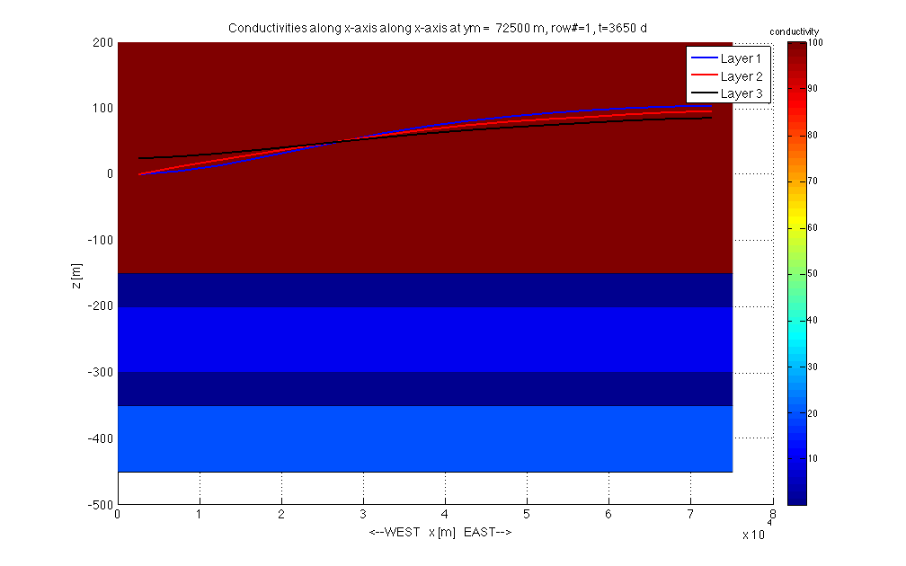
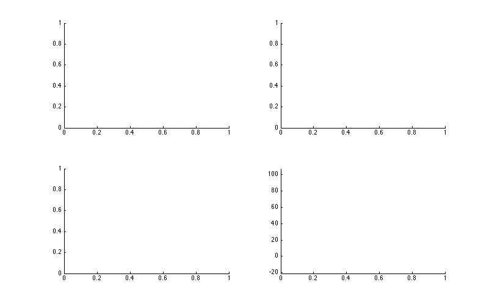
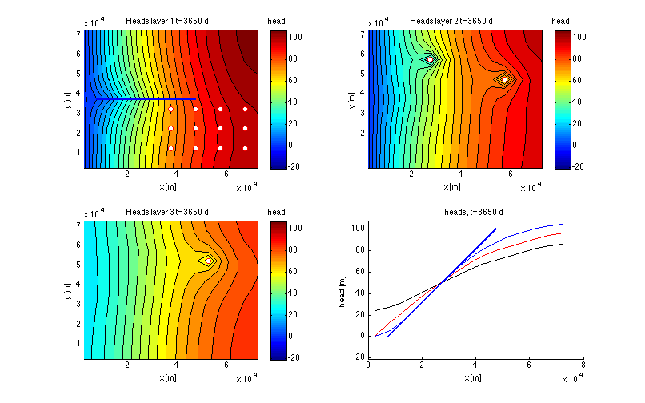

Visualization of the generic transient flow model
Contents
mf_analyze is used to show the results of the model
Retrieve the basename of this model
load name % retrieve basename stored in file name.mat load(basename) % get saved model arrays load underneath % retrieve line H = readDat([basename '.HDS']); % read computed heads B = readBud([basename '.BGT']); % read ceomputed budgets time = [H.time]; % time saved in H (heads struct)
Reading MODFLOW binary output file <<generic_transient.HDS>> verbose= 0 Scanning headers .finished, 180 records scanned File contains the following: Number of records in file : 180 Number of stress userPeriods: 1 Number of time steps : 60 Number of layers : 3 Number of rows : 15 Number of columns : 15 Maximum time in file " 3650 Reading requested data ... . 180 records read. . 60 records in output struct. Trying to read generic_transient.BGT as BINARY file...it works! Scanning 480 headers ....finished, 480 records scanned File contains the following: Number of records in file: 480 Number of stress periods : 1 Number of time steps : 60 Number of layers : 3 Number of Rows : 15 Number of columns : 15 Number of unique labels : 8 CONSTANTHEAD DRAINS FLOWFRONTFACE FLOWLOWERFACE FLOWRIGHTFACE RECHARGE STORAGE WELLS Reading the requested data ... Please wait while I'm getting the requested data ... ..................................................7 ..................................................13 ..................................................19 ..................................................25 ..................................................32 ..................................................38 ..................................................44 ..................................................50 ..................................................57 .............................. 60 records in output struct.
Plot conductivities in a cross section along x-axis
gr.plotXSec(1,'figure','xsec','title','Conductivities along x-axis','fontsize',14,'all','lay',HK,'cbd',VKCB); ht = get(gca,'title'); s = get(ht,'string'); hb = colorbar; set(get(hb,'title'),'string','conductivity'); % plot the heads onto this XSection along row iy iy = hit(gr.yGr,line(1,2)); for it=1:length(H) if it==1 h(1) = plot(gr.xm,XS(H(it).values(iy,:,1)),'b','linewidth',2); h(2) = plot(gr.xm,XS(H(it).values(iy,:,2)),'r','linewidth',2); h(3) = plot(gr.xm,XS(H(it).values(iy,:,3)),'k','linewidth',2); else for ia=1:3 set(h(ia),'ydata',H(it).values(iy,:,ia)); end end set(ht,'string',sprintf('%s, t=%.4g d',s,time(it))); drawnow(); end legend(h,'Layer 1','Layer 2','Layer 3');
Plot conductivities in a cross section along y-axis
gr.plotYSec(1,'figure','ysec','title','Conductivities along y-axis','fontsize',14,'all','lay',HK,'cbd',VKCB); ht = get(gca,'title'); s = get(ht,'string'); hb = colorbar; set(get(hb,'title'),'string','conductivity'); % plot the heads onto this YSection along column ix ix = 8; for it=1:length(H) if it==1 h(1) = plot(gr.ym,YS(H(it).values(:,ix,1)),'b','linewidth',2); h(2) = plot(gr.ym,YS(H(it).values(:,ix,2)),'ro','linewidth',2); h(3) = plot(gr.ym,YS(H(it).values(:,ix,3)),'k','linewidth',2); else for ia=1:3 set(h(ia),'ydata',H(it).values(:,ix,ia)); end end set(ht,'string',sprintf('%s, t=%.4g d',s,time(it))); drawnow(); end legend(h,'Layer 1','Layer 2','Layer 3');
Plot stream function
The figure is 3D so the stream function cannot be shown
Contour heads and generate video
figure('name','contours of heads','position',screenPos(0.6)); hrange = ContourRange(H,50); % suitable set of head contour elevations ax(1) = subplot(2,2,1,'nextplot','add','clim',hrange([1 end])); ax(2) = subplot(2,2,2,'nextplot','add','clim',hrange([1 end])); ax(3) = subplot(2,2,3,'nextplot','add','clim',hrange([1 end])); ax(4) = subplot(2,2,4,'nextplot','add','ylim',hrange([1 end]));
Setup video
vidObj = VideoWriter(basename); vidObj.open(); for it=1:numel(time) for ia=3:-1:1 % generate title string for this time sttl{ia} = sprintf('Heads layer %%d t=%.4g d',time(it)); end if it==1 % special, initialized plots and attributes for ia=3:-1:1 % for all layers xlabel(ax(ia),'x [m]'); ylabel(ax(ia),'y [m]'); ht(ia)= title(ax(ia),sprintf(sttl{ia},ia)); hb = colorbar('peer',ax(ia)); title(hb,'head'); % Contouring [~,hc{ia}] = contourf(ax(ia),gr.xm,gr.ym,H(it).values(:,:,ia),hrange); % Well locations well([well.iLay]==ia).plotXY(ax(ia),'marker','o','markerEdgeColor','r'); % Plot drain if ia==1, plot(ax(1),line(:,1),line(:,2),'b','linewidth',2); end end % setup picture 4 xlabel(ax(4),'x [m]'); ylabel(ax(4),'head [m]'); ht(4) = title(sprintf('head t=%.4g d',time(it))); h(1) = plot(ax(4),gr.xm,H(it).values(iy,:,1),'b'); h(2) = plot(ax(4),gr.xm,H(it).values(iy,:,2),'r'); h(3) = plot(ax(4),gr.xm,H(it).values(iy,:,3),'k'); plot(ax(4),line(:,1),line(:,3),'b','linewidth',2); else % update data in plots % update the head contours (picture 1, 2, 3) for ia=1:3 set(ht(ia),'string',sprintf(sttl{ia},ia)); set(hc{ia},'zData',H(it).values(:,:,ia)); end % update 4th picture for ia=1:3 set(ht(4),'string',sprintf('heads, t=%.4g d',time(it))); set(h(ia),'ydata',H(it).values(iy,:,ia)); end end vidObj.writeVideo(getframe(gca)); end vidObj.close();
Conclusion
To incorporate and show transient behavior in a model requires minor changes of an already existing steady-state model